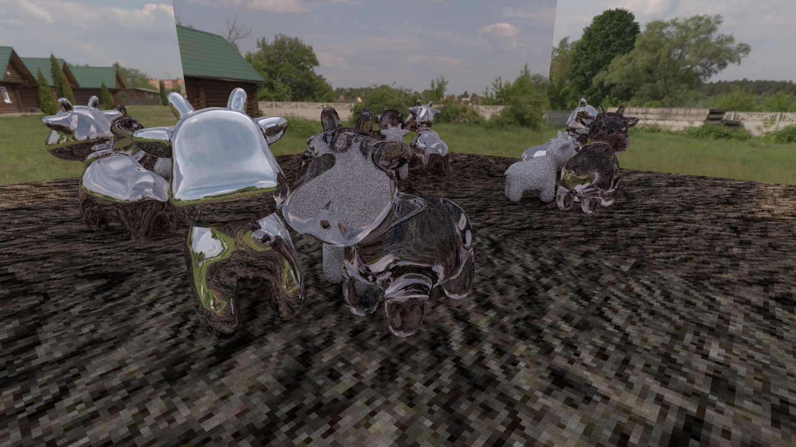

**Assignment 3 Report**
AndrewID: rafaelri
(##) About this template
* You can view your writeup by opening it in a browser - right click this file and open with your browser of choice.
* Replace reference images with your own screenshots or renders when applicable.
* Include descriptions of any encountered problems and the time you spent on each task.
* **NOTE: The images you will submit here are different from the images in `A1.md`. Please make sure you are submitting the correct images.**
(##) A3T1 CHECKPOINT
Complete: took ~3 hours (if I remember correctly from last week
You do not need any screenshots for this task.
Your completion will be graded based on the reference `test.a3.task1.cpp` file and
checking that camera rays properly fill up the camera view frustrum.
(##) A3T2 CHECKPOINT
Complete: took ~8 hours (if I remember correctly from last week)
You do not need any screenshots for this task.
Your completion will be graded based on the reference `test.a3.task2.*.cpp` files and
checking that rendering spheres and triangles works properly.
(##) A3T3 CHECKPOINT
Complete: took ~20 hours (if I remember correctly from last week)
You do not need any screenshots for this task.
Your completion will be graded based on the reference `test.a3.task3.*.cpp` files and
checking that the generated BVH looks reasonable and rendering large meshes is fast and correct.
(##) A3T4 Final
Complete: took ~10 hours
You do not need any screenshots for this task.
Your completion will be graded based on the reference `test.a3.task4.*.cpp` files and
checking that rendering lambertian materials look correct.
(##) A3T5 Final
Complete: took ~8 hours
You do not need any screenshots for this task.
Your completion will be graded based on the reference `test.a3.task5.*.cpp` files and
checking that rendering mirror, refract and glass materials look correct.
(##) A3T6 Final
Complete: took ~2 hours
You do not need any screenshots for this task.
Your completion will be graded based on the reference `test.a3.task6.*.cpp` files and
checking that there is a speedup and improvement between with and without the task 4 direct lighting.
(##) A3T7 FINAL
Complete: took ~5 hours
You do not need any screenshots for this task.
Your completion will be graded based on the reference `test.a1.task7.*.cpp` file and
checking that rasterizing scenes with environment lighting yields correct sampling.
(##) RENDERED IMAGE FINAL
Your image:

Explanation of what it is and how you made it:
I wanted to emphasize the mirror and glass materials because I spent so long making them so it's a scene of a cow family where one parent is made of glass and the other is made of mirrors and their son is lambertian. I thought it would be funny to have them try to hide their son when they're made of glass and mirrors. Also added mirror walls to really make it impossible for them to obscure their son. :)
Any free model sources you need to credit?
HDRI: Resting Place from Polyhaven
Dirt: https://www.istockphoto.com/photo/soil-seamless-texture-gm527746121-53316738
(##) EXTRA CREDIT FINAL
Use this section to explain any extra credit implementations you have made.
(##) Feedback
Use this section to provide feedback about the assignment.